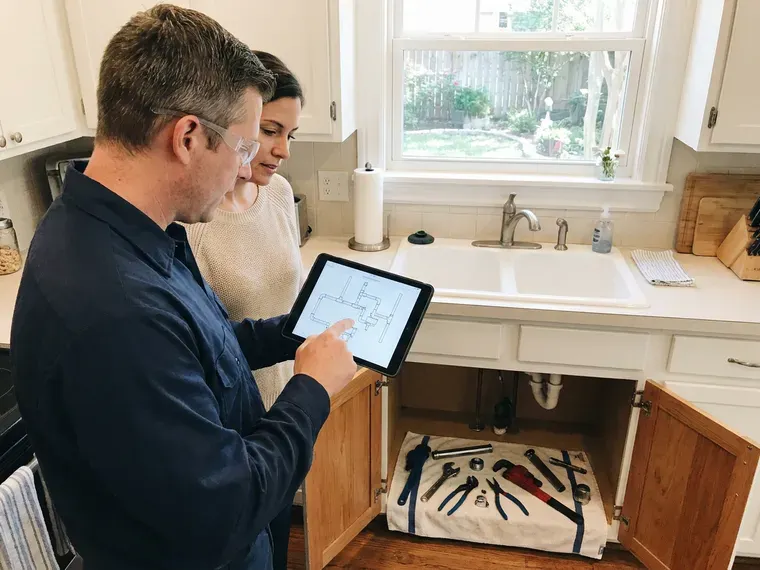

Grease Trap Installation in Kalamazoo, MI
Flow control, vent and a full sink drained to test it on every grease trap we install in Kalamazoo.
- Commercial Crews Only
- Sized to PDI and ASME
- Traffic-Rated Lids
- Written Estimates

Get a Grease Trap That Passes in Kalamazoo, MI
Call CHV Plumbing at (810) 380-5918 and a tech will walk your kitchen this week.
Grease Trap Installation in Kalamazoo, MI
Three inspectors care about your grease trap. The plumbing inspector checks the install, the sewer authority checks the size, and the health inspector checks that it can be cleaned. We plan for every one of them up front.
Some of what we do:
- Traffic-rated lids for drive lanes
- Slab cutting and floor patching
- Units certified to PDI G-101 or ASME

Additional Kitchen Plumbing Services in Kalamazoo, MI
Our kitchen plumbing services in Kalamazoo, MI cover sinks, disposals, dishwashers, and grease traps so your kitchen stays clean, safe, and fully functional.



Customers
Why Choose CHV Plumbing for Grease Trap Installation in Kalamazoo, MI?
Pump-out haulers charge by the visit, and a trap sized right goes longer between visits. Over a few years, that difference can pay for a good part of the install. Undersizing never saves money. You see the numbers for both sizes before choosing.
- Cleanable Placement, We leave room to lift the lid and scrape the baffles without moving equipment.
- Certified Units, We install traps certified to PDI G-101 or the matching ASME standard.
- Written Labor Warranty, Our workmanship coverage is on paper before we start.
Citywide Coverage
From a single coffee bar to a commissary serving a dozen food trucks, we cover grease trap installs throughout the Kalamazoo area. Only the size changes. Every job gets the same sizing math and the same inspection checklist.
Experienced Team
Behind the crew, our office staff file the permits and track inspection dates so the plumbers can stay on the tools. There is one person to call about dates. That person knows where the permit stands, when the tank is due and what the inspector asked for last time. Fewer dropped balls.
Safety-First Approach
Grease traps produce hydrogen sulfide gas, which can knock a person unconscious in a confined space within a few short breaths. Nobody on our crew enters a buried tank without a gas meter and fresh air blowing in. Usually nobody has to go in. We do as much as possible from the surface.
Trusted Certified Kalamazoo Plumbing Services Professionals
At CHV Plumbing, we take pride in licensed, certified plumbing services throughout Kalamazoo, MI. Credentials matter in this trade. Every repair, install and maintenance visit follows strict safety and quality rules, and the plumbers doing the work carry recognized industry credentials.
Call Us Now PHCC Plumbing Contractor Recognition
PHCC Plumbing Contractor Recognition Better Business Bureau (BBB) Accreditation
Better Business Bureau (BBB) Accreditation Angi Certified Pro
Angi Certified Pro ISO 9001 Quality Management Certification
ISO 9001 Quality Management CertificationGrease Traps and Interceptors Installed in Kalamazoo, MI
New Restaurant Build-Out Grease Traps in Kalamazoo
On a new build-out, the grease trap gets decided before the slab is poured, not after. The drawings and the equipment list from your kitchen designer tell us what will drain where. Changes get expensive. Saw-cutting a finished floor to relocate a trap can add several days to a build-out, so we flag sizing or location problems at plan review.

Gravity Grease Trap Installation in Kalamazoo
A gravity interceptor works on time, not machinery. The tank holds water for roughly half an hour, which gives grease time to rise and food solids time to drop. We size by fixture count and retention time, then match the tank to what the local pretreatment office for your building will accept. No moving parts to fail.
Grease Trap Replacement and Upgrades in Kalamazoo
Plastic and steel traps both wear out, just in different ways. With steel, rust eats the seams and the welded baffles first. Plastic cracks. When we pull an old trap we cap the lines, haul it out, set the new unit on the same footprint where possible and reconnect with no-hub couplings so the next swap goes faster.
Restaurant Grease Trap Compliance in Kalamazoo, MI
Most sewer authorities run a FOG program with an inspector who opens your trap and checks your pump-out manifests against the schedule they set. Fail that and you can face fines or a surcharge on your sewer bill. We install to pass. That means a sample port where the program wants one and a unit sized to the number their formula gives, not the number the last contractor guessed.
Emergency Grease Trap Services in Kalamazoo, MI
A grease trap backing up into the floor sinks at the start of Friday dinner service means a closed kitchen and a health inspector who may not let you reopen until it is fixed. We send a tech with a jetter and a camera to find out whether the trap or the line on either side is the problem. Often it is the outlet. If the trap itself has failed, we can usually set a temporary unit and schedule the permanent replacement.
Residential Grease Interceptor Setup in Kalamazoo, MI
Homes rarely need a grease trap, though some do. We see them in licensed home kitchens and in houses where the sewer lateral keeps clogging with grease. A small 4 to 7 GPM unit under the kitchen sink catches most of it, and cleaning takes about ten minutes with a spatula and a bucket. Check with your local health office first.
Hydro-Mechanical Grease Trap Installation in Kalamazoo, MI
Hydromechanical traps use baffles and a vented flow control to pull grease out of water moving at a set rate, usually 20 to 100 gallons per minute. You can put one under a sink, beside a dish station or in a pit in the slab. The flow control is not optional. Without it, a dumped sink pushes water through faster than the unit is rated for and the grease goes out the outlet. We look for units certified to PDI G-101 or ASME A112.14.3.

Commercial Grease Trap Installation in Kalamazoo
A commercial kitchen with a three-compartment sink, a pre-rinse station and two floor sinks can push 50 gallons a minute of greasy water at the dinner rush. Our sizing starts from your peak flow, the worst ten minutes of the night, rather than a daily average. Undersized traps are the usual failure. We set the unit, run the inlet and outlet in schedule 40 PVC or cast iron, and add the flow control fitting the manufacturer calls for.
Grease Trap Installation Near Kalamazoo, MI
Local crews know the local inspectors. We know which reviewers want the sizing math on the drawing and which want it on a separate sheet in the permit packet. A return trip for an inspection correction is short for us.
Nearby service matters after the install too. Lids crack and gaskets wear, and a crew based near you can be back on site the same day with the part. Spare gaskets and lid bolts for the brands we set ride on our trucks.
CHV Plumbing at a Glance
- Fully licensed plumbing team covering Kalamazoo, MI
- 24/7 emergency service with same-day scheduling
- Clear written estimates, no hidden fees
- 4.9-star rated by 670+ Michigan customers
Kalamazoo Map
Kalamazoo Information
- Population
- 73,126
- Area codes
- 269/616/248
- Service area
- Kalamazoo and towns within a 40 mile drive
- Nearby
- Portage, Battle Creek, Kentwood, Holland
A properly sized grease trap keeps grease out of your lateral and out of the public main in Kalamazoo, MI. Humid summers bring condensation on cold pipes and damp basements, which can mask slow leaks.
Expert Services
Reach out to CHV Plumbing for reliable plumbing work done by licensed pros in Kalamazoo, MI.
Our Specialized Plumbing Services in Kalamazoo, MI
At CHV Plumbing, you get every kind of plumbing service from one company across Kalamazoo, MI. We go from leak detection all the way to full system installations, for homes and commercial buildings, and we do it quickly at a fair price. Take a look at our core services below:


From Sizing to Inspection in Kalamazoo, MI
Most delays come from permits, not the install. This is how we keep a Kalamazoo job moving.
Request a Quote
Call CHV Plumbing at (810) 380-5918 for a site visit. Bring your plans if it is a new build-out.
Size and Permit
We size the trap from your fixtures and file the permit and sewer authority review.
Install and Inspect
We set it, test it and stay for the inspection. You get copies of the paperwork.
Frequently Asked Questions About Grease Trap Installation in Kalamazoo
Expect roughly $1,500 to $4,000 for a small indoor trap and $7,000 to $20,000 or more for an outdoor gravity interceptor. A floor-recessed trap costs more than one set on the floor. Location drives the rest. Lids under traffic cost more, and so does repaving.
You get the manufacturer's warranty on the unit and a written labor warranty from us on the installation. We register the unit with the maker so the factory warranty is on record. Keep your cleaning logs. Some manufacturers ask for proof of regular service before they honor a claim on a cracked body or a failed baffle.
That depends on the code your jurisdiction follows and the type of trap. Some programs require dish machines to drain through the interceptor, while others keep high-temperature discharge away from certain hydromechanical units because hot water and detergent can push emulsified grease through. We check before we pipe it. Garbage disposers are usually not allowed to drain into a grease interceptor.
An under-sink hydromechanical trap with good access is usually a half-day job, including the flow control and a leak test. Floor-recessed units take longer because we cut and patch concrete. Outdoor tanks are different. A buried interceptor runs two to five working days after permit, mostly driven by the dig and the paving repair.
The common rule is to clean before grease and solids fill 25 percent of the trap's depth. Busy kitchens with small indoor traps often hit that mark every week. Outdoor tanks go longer. A gravity interceptor typically gets pumped monthly to quarterly, and some sewer programs set the schedule for you.
For indoor traps we lean on Zurn, Watts, Schier and Endura, because their parts are easy to find and their units carry PDI or ASME certification. We like the plastic bodies from Schier where steel would rust out. Brand matters less than sizing. A well-known trap installed too small will still fail inspection, so we pick the size first and the brand second.
Almost always, yes. You will usually need a plumbing permit plus a sign-off from the sewer authority's pretreatment program. We pull the permit, submit the sizing calculation and schedule the rough and final inspections. Expect an inspector on site.
On a commercial kitchen, no. Nearly every jurisdiction requires a licensed plumber to pull the permit and do the work. For a home kitchen you might be allowed to, as long as the flow control and venting are done correctly. Ask the building department first.
What Our Customers Say About Our Plumbing Experts

Monica A.
Our water bill nearly doubled in one month with no change in how we used water. The tech checked the meter, heard the leak under the hallway with his equipment, and opened a hole about a foot square. Fixed the same day.
Slab Leak Repair · Portage, MI
Mark T.
The floor drain in our office break room backed up every few weeks. The plumber ran a cable, then put a camera down and found roots at a joint about thirty feet out. Seeing it on the screen made the decision easy.
Drain Cleaning · Holland, MIJessica T.
We were adding a gas range in a kitchen remodel and needed a new line run from the meter. The plumber pulled the permit, ran the pipe through the crawl space, and had it inspected and approved within the week.
Gas Line Repair · Holland, MI
Diane F.
My kitchen faucet had dripped for months and I finally got tired of hearing it at night. CHV Plumbing came out the next morning, replaced the cartridge and the O rings, and tightened a loose base that was letting water under the sink.
Faucet Repair · Wyoming, MI
Lisa C.
Water was pouring out from under the washing machine on a holiday weekend. CHV Plumbing talked me through closing the valves over the phone and had a plumber at the house within ninety minutes. It was a burst fill hose.
Emergency Plumbing · Grand Rapids, MIPaul B.
Our pit pump ran nonstop even in dry weather. The plumber found the check valve was stuck open, so the same water kept cycling back into the pit. New valve, new float switch, done in an hour. It runs quiet now.
Sump Pump · Grand Rapids, MI